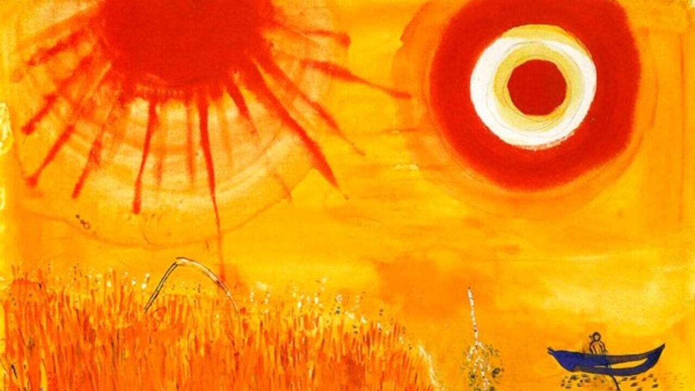
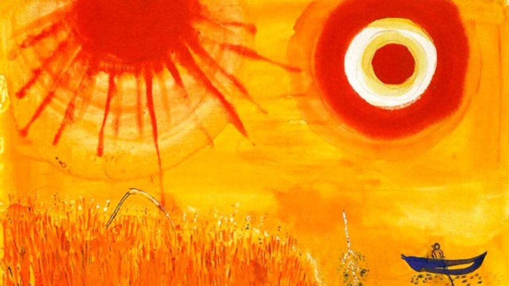
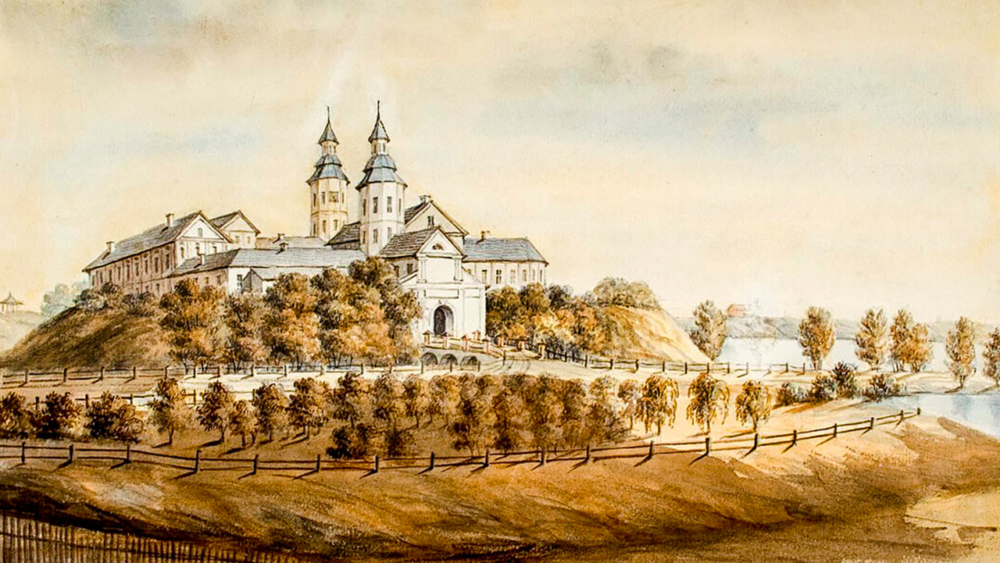
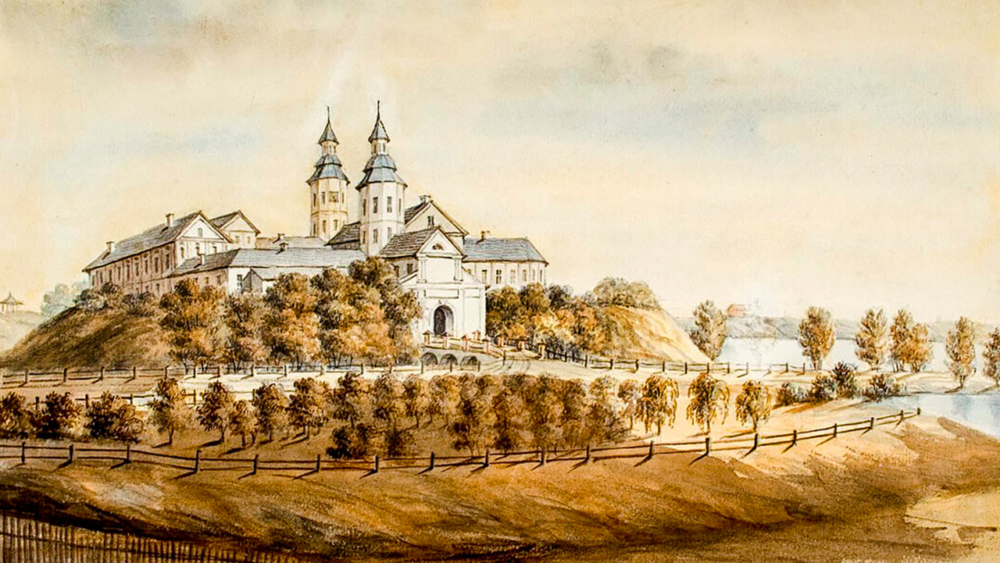

У прававой дзяржаве павінен кіраваць закон, а не асоба
Леў Сапега
Чалавек, які аднойчы адмовіўся ад волі, назаўжды робіцца вязнем
Васіль Быкаў
Дум не скуеш ланцугамі
Янка Купала
Няма, браткі, большага шчасьця на гэтым сьвеце, як калі чалавек мае розум і навуку ў
галаве
Кастусь Каліноўскі
Збірайце добрыя думкі ў сэрцы сваім, як пчала мёд
Эўфрасіньня Полацкая
Ваш суд мне не страшны, хай злосна скавыча
У будцы сабака, увагі на пса не звярну я.
Як
раіць пясняр Сыракомля, пішу я
Цяпер, як заўсёды, на мове мужычай
Вінцэнт
Дунін-Марцінкевіч
Хто не памятае мінулага, хто забывае мінулае – асуджаны зноў перажыць яго. Безліч
разоў.
Уладзімер Караткевіч
 



 
